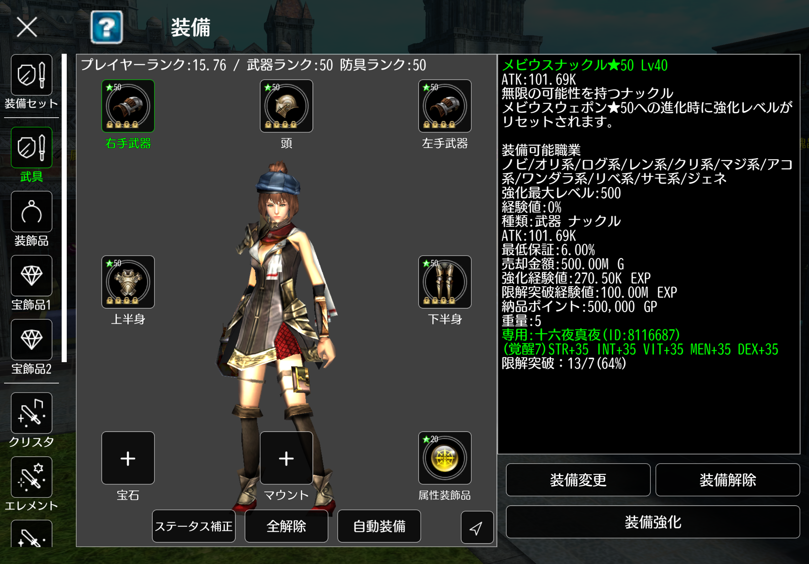

【アヴァベルオンライン】装備の種類まとめ｜武具・宝石・クリスタ完全解説
アヴァベルオンラインの装備は種類が多く初心者には分かりづらいです。
この記事では最強装備の揃え方・武具★50優先度・クリスタ構成まで完全解説します。
「まず何を揃えるべきか」がこの記事だけで分かります。
最強装備の基本（武具）
武具
ここではアヴァベルオンラインの基本装備「武具」について解説します。
結論から言うと、まずは
★50装備を揃える
ことが最優先です。
武具はキャラの強さに直結する最重要装備です。初心者〜中級者はまず武具を整えることでプレイヤーランクと戦闘力が大きく上がります。
まず、武具にはどんな種類があるのかを見ていきましょう。
-
武器：
右手武器
左手武器 -
防具：
頭
上半身
下半身
武具の主な入手方法は「装備ダンジョン」です。
▼入手方法
- 装備ダンジョンをクリア（スキップ可）で★45・★50装備ドロップ
- アチーブメント報酬
- ガチャ
武器枠の装備パターンは以下の通りです。
▼装備パターン
- 同種の武器を左右に装備可能
- 右手片手武器＋左手盾の組み合わせ可能
- 両手武器も同種なら左右に1つずつ装備可能
防具は「頭・上半身・下半身」の各枠に対応した装備を装着します。
職業装備について
さらに上位装備として職業装備があります。
職業装備は神越職から装備可能な強力な武具ですが、 特定の職業でしか装備できないという制限があります。
初心者向けではないため、ここでは詳細な解説は割愛します。
武器と防具の主な効果は以下の通りです。
- 武器： ATK・MATK上昇（攻撃力）
-
防具：
DEF・減算DEF上昇（物理耐久）
MDEF・減算MDEF上昇（魔法耐久）
HP・SP上昇
これらのステータスは、装備の強化（レベル上げ）と 進化（レアリティ上昇）によって伸びていきます。
装備レベルの上限は レアリティ×10となっており、 ★45装備ならLv.450まで強化可能です。
また、メビウス装備のレアリティ上限は ★50までとなります。
現在はアチーブメント報酬などで★50装備が入手しやすいため、
まずは全身★50装備を揃えることを目標にしましょう。
★45装備は繋ぎとして使用し、揃い次第★50へ更新していきましょう。
初心者向け結論
・まずは全身★50装備を目標
・★45は繋ぎ装備でOK
・強化より先に★50を揃えるのが最優先
関連記事
宝石
宝石枠には「秘宝」「叡智」「オーブ」などの装備をセットできます。結論としては、初心者の内は宝石枠の装備を入手するのは難しく、入手しても職業次第では装備不可の場合がある為、読み飛ばしても問題はありません。
秘宝・叡智は、必要素材を集めて オーブ合成屋で生産することで入手できます。 オーブは毎月「秘宝ダンジョン」を10回クリアすると、 アチーブメント報酬から入手可能です。
- 秘宝・叡智： ステータス上昇
-
オーブ ：
ステータス上昇（ミスリルオーブのみ）
ステータス上限上昇
宝石装備には以下の注意点があります。
- 秘宝・叡智・オーブには効果時間（期限）がある
- 効果時間が切れるとステータス効果は消える
- オーブはジェネシス職のみ装備可能
宝石とプレイヤーランクについて
宝石はプレイヤーランクの計算に含まれないため、装備してもしなくてもプレイヤーランクに変動はありません。
マウント
マウント枠にはマウント装備をセットします。 マウント装備には 「移動用」と「ステータス強化」 の2つの役割があります。
マウント装備をセットした状態でマウントスキルを発動すると、 モンスターや車などに騎乗できるようになり、移動速度が上昇します。 また、ステータス面では S・I・V・M・Dの5ステータスがすべて上昇 します。
マウントの入手方法はガチャのみで、 有償魔石と無償魔石でステータス上昇量が異なります。
- 無償3魔石： 各ステータス 200〜600上昇
- 有償3魔石： 各ステータス 1000上昇
初心者〜中級者にとって、ステータスが 全体で最大5000上昇する効果は非常に大きい ため、可能であれば有償3魔石マウントの入手がおすすめです。
無課金の場合でも、無償魔石に余裕があるタイミングで 1回だけ確保しておく と戦闘力が伸びます。
マウントとプレイヤーランクについて
マウントは全て★10固定となります。また、プレイヤーランクの計算にマウントは含まれないため、マウントを装備してもしなくてもプレイヤーランクに変動はありません。
属性装飾品
属性装飾品枠には勾玉を装備する事で自身の属性を決めることができます。
装飾品（メビウスリング）
- 最大6個装備可能
- ソウルダンジョン入手
- ★45・★50ドロップ
★45：2250 ★50：2500
欲しいステなら★45でもOK。
宝飾品
プレイヤーランク上昇装備。 秘宝ダンジョンで入手。
ドロップ率が非常に低いため ★45目標でOK。 サブステは気にしなくてよい。
クリスタ
★×100ステ上昇の超重要装備。
- クリスタダンジョンで結晶入手
- ハイクリスタ宝石へ合成
- さらにリング化
容量拡張本20個で1枠解放可能。
エレメント
属性ダメージの耐性・威力上昇。
- 無償魔石ガチャで★40入手
- 容量拡張本20個で1枠解放
レジスト
状態異常耐性装備。
- レジストダンジョンで結晶入手
- 容量拡張本20個で1枠解放
ペット
ステータス上昇装備。
- ペットダンジョンで結晶入手
- ★51でランダム生産
- 容量拡張本20個で1枠解放
※散歩ペットは飾り
まとめ
アヴァベルの装備は武具だけでなく、クリスタ・宝石・ペットなど多くの要素で構成されています。 まずは武具とクリスタを優先して整えることで戦闘力が大きく伸びます。